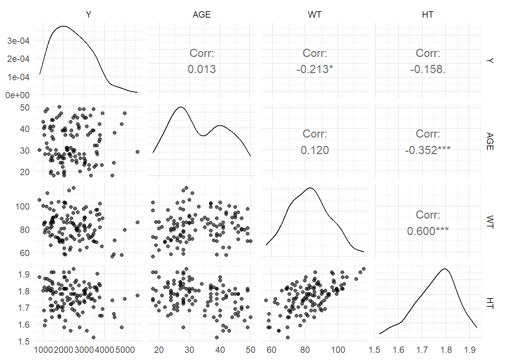
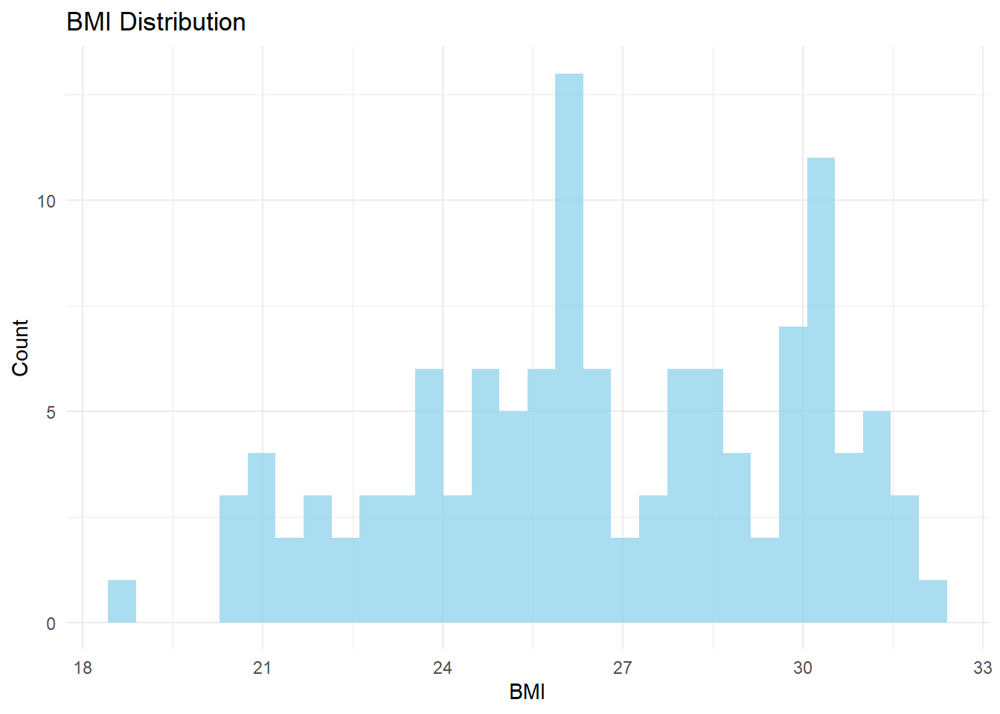
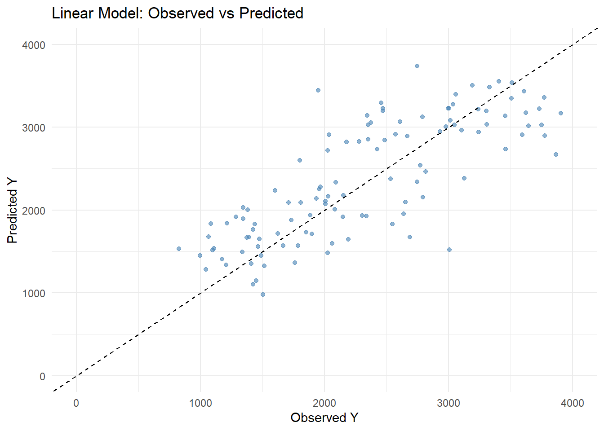
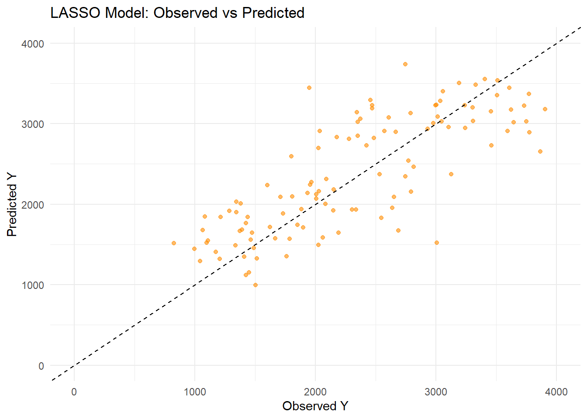
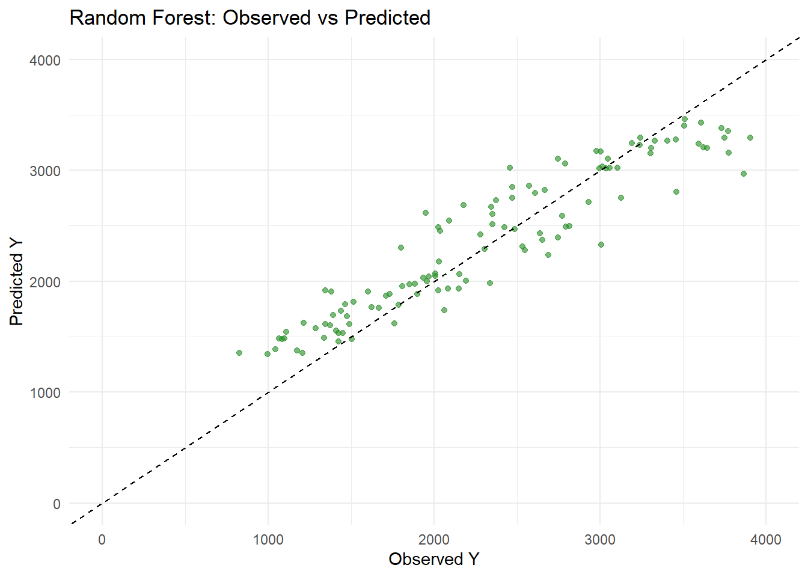
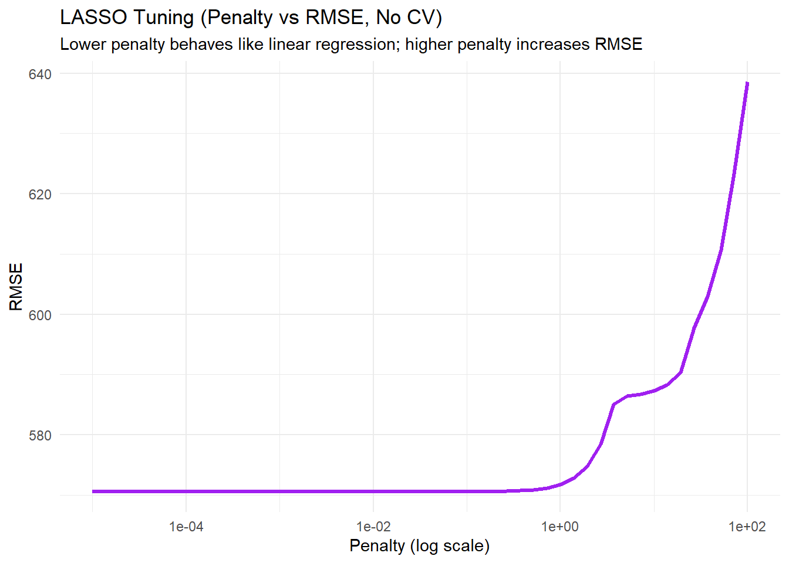
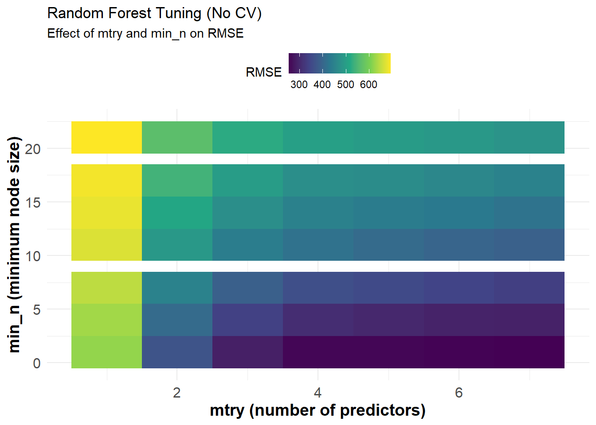
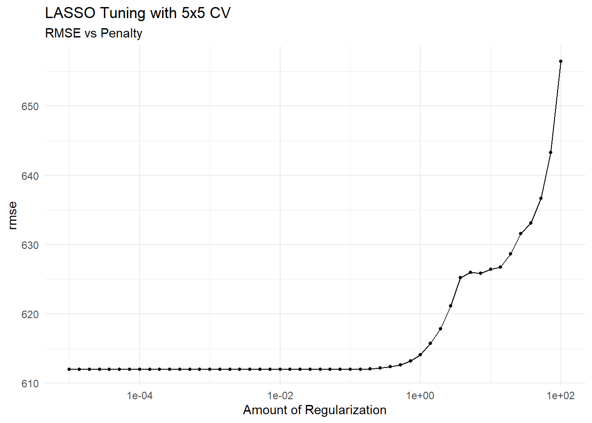
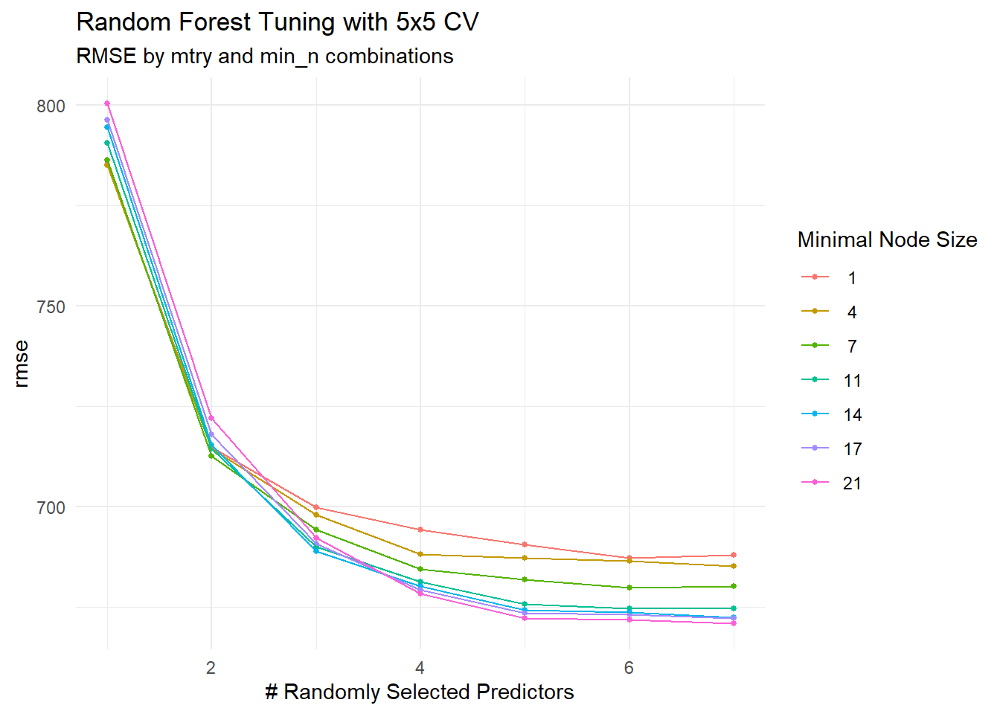

Before I begin modeling, I will load all the necessary libraries. These packages support data preprocessing, machine learning, plotting, and tuning workflows in a consistent and reproducible manner.
── Conflicts ────────────────────────────────────────── tidyverse_conflicts() ──
✖ readr::col_factor() masks scales::col_factor()
✖ purrr::discard() masks scales::discard()
✖ dplyr::filter() masks stats::filter()
✖ stringr::fixed() masks recipes::fixed()
✖ dplyr::lag() masks stats::lag()
✖ readr::spec() masks yardstick::spec()
ℹ Use the conflicted package (<http://conflicted.r-lib.org/>) to force all conflicts to become errors
library(ggplot2) # For plottinglibrary(here) # For project-relative file paths
here() starts at C:/Users/mz13171/Downloads/MADA-course/mohammedzuber-MADA-portfolio
library(readr) # For reading RDS or CSV fileslibrary(GGally) # Provides ggpairs for correlation plots
Registered S3 method overwritten by 'GGally':
method from
+.gg ggplot2
library(glmnet) # For LASSO
Loading required package: Matrix
Attaching package: 'Matrix'
The following objects are masked from 'package:tidyr':
expand, pack, unpack
Loaded glmnet 4.1-8
library(ranger) # For random forestlibrary(tune)library(finetune) # Load library
Next, we set a random seed to ensure our results are reproducible. We then load the cleaned dataset from the previous step and check its structure to confirm successful import.
# Set a random seed for reproducibilityset.seed(1234)# Load the cleaned data saved from the previous exercisedata <-readRDS(here("ml-models-exercise", "final_data_cleaned.rds"))# Check the structure to verify it's loaded correctlystr(data)
In this step, i perform some data cleaning. Specifically, we recode the RACE variable by combining values 7 and 88 into a new group labeled as 3. This simplifies the race categories and reduces sparsity.
# Recode RACE: combine levels 7 and 88 into a new category called 3# We'll first convert RACE to numeric (if it's a factor), do the recoding, and then back to factordata <- data %>%mutate(RACE =as.numeric(as.character(RACE)), # Ensure RACE is numeric for comparisonRACE =case_when( RACE %in%c(7, 88) ~3, # Combine 7 and 88 into new category 3TRUE~ RACE # Keep other values as-is ),RACE =as.factor(RACE) # Convert back to factor )# Check the new distribution of RACEtable(data$RACE)
1 2 3
74 36 10
3 Pairwise correlations
In this section, I focus on understanding relationships between continuous predictors and the outcome variable Y. I use a pairwise correlation plot to visualize both scatterplots and correlation coefficients between variables such as AGE, WT, HT, and Y.
# Select only the continuous variables# We'll exclude categorical variables like DOSE, SEX, and RACE# and keep: Y (outcome), AGE, WT, HTdata_cont <- data %>%select(Y, AGE, WT, HT)# Use GGally::ggpairs to make a pairwise correlation plotggpairs(data_cont,lower =list(continuous =wrap("points", alpha =0.6)),upper =list(continuous =wrap("cor", size =4)),diag =list(continuous =wrap("densityDiag"))) +theme_minimal()

The pairwise correlation plot shows no strong collinearity among the continuous variables, with the highest correlation being 0.60 between weight and height. The outcome variable Y is only weakly correlated with all predictors, indicating no single predictor dominates. This supports proceeding with multivariable models without concern for multicollinearity.
4 Feature Engineering
Here, I engineer a new variable called BMI (Body Mass Index) using the patient’s weight and height. This derived feature may improve model performance by capturing a meaningful health metric. I also inspect the BMI distribution to verify it’s within a realistic human range.
# BMI = Body Mass Index# Formula: BMI = weight (kg) / (height in meters)^2# Since WT is in kg and HT is already in meters, we can directly apply the formuladata <- data %>%mutate(BMI = WT / HT^2# Correct BMI formula for metric units )# Inspect the first few BMI values to verify they are in a normal human rangehead(data$BMI)
[1] 30.10 25.96 21.92 28.43 26.42 22.13
# Summary statistics of BMI for a sanity checksummary(data$BMI)
Min. 1st Qu. Median Mean 3rd Qu. Max.
18.69 24.54 26.38 26.63 29.70 32.21
# Create a histogram to visualize BMI distributionggplot(data, aes(x = BMI)) +geom_histogram(bins =30, fill ="skyblue", alpha =0.7) +labs(title ="BMI Distribution",x ="BMI",y ="Count" ) +theme_minimal()

The histogram shows that BMI values in the dataset range roughly from 18 to 33, with a concentration of individuals between 24 and 30. This indicates a generally healthy to slightly overweight population based on standard BMI categories. The distribution appears somewhat uniform with minor peaks, suggesting variability in body composition across the sample. # Model building I start model development by preparing a modeling recipe that includes all predictors and encodes categorical variables using dummy variables. This ensures compatibility with algorithms that require numeric inputs.
# Ensure reproducibilityrngseed <-1234set.seed(rngseed)# Updated recipe that converts categorical variables to dummy/one-hot encoded variablesmodel_recipe <-recipe(Y ~ DOSE + AGE + SEX + RACE + WT + HT + BMI, data = data) %>%step_dummy(all_nominal_predictors()) # Convert all categorical predictors to dummies
4.1 Linear Model
Here, I define and fit a basic linear regression model using all predictors. I also compute the RMSE to evaluate its performance on the training data.
# Define linear model (no tuning)lm_model <-linear_reg() %>%set_engine("lm")# Workflowlm_workflow <-workflow() %>%add_model(lm_model) %>%add_recipe(model_recipe)# Fit and predictlm_fit <- lm_workflow %>%fit(data)lm_preds <-predict(lm_fit, data) %>%bind_cols(data)# Evaluatelm_rmse <- lm_preds %>%rmse(truth = Y, estimate = .pred)lm_rmse
# A tibble: 1 × 3
.metric .estimator .estimate
<chr> <chr> <dbl>
1 rmse standard 570.
This result shows that the Root Mean Squared Error (RMSE) for the linear model is approximately 570.47. RMSE measures the average difference between observed and predicted values — so in this case, on average, the linear model’s predictions deviate from the actual values by around 570 units. This will serve as a baseline to compare with more complex models like LASSO and Random Forest. ## Observed vs Predicted — Linear Model I now plot predicted values against actual values for the linear regression model. A diagonal reference line helps assess how closely predictions match the observed outcomes.
ggplot(lm_preds, aes(x = Y, y = .pred)) +geom_point(alpha =0.6, color ="steelblue") +geom_abline(slope =1, intercept =0, linetype ="dashed", color ="black") +scale_x_continuous(limits =c(0, 4000)) +scale_y_continuous(limits =c(0, 4000)) +labs(title ="Linear Model: Observed vs Predicted",x ="Observed Y",y ="Predicted Y" ) +theme_minimal()
Warning: Removed 6 rows containing missing values or values outside the scale range
(`geom_point()`).

4.2 LASSO Model (penalty = 0.1)
Next, I fit a LASSO regression model with a fixed penalty of 0.1. This model applies regularization, which can reduce overfitting and improve generalizability. I calculate the RMSE to evaluate its predictive performance.
# LASSO model with fixed penaltylasso_model <-linear_reg(penalty =0.1, mixture =1) %>%set_engine("glmnet")# Workflowlasso_workflow <-workflow() %>%add_model(lasso_model) %>%add_recipe(model_recipe)# Fit and predictlasso_fit <- lasso_workflow %>%fit(data)lasso_preds <-predict(lasso_fit, data) %>%bind_cols(data)# Evaluatelasso_rmse <- lasso_preds %>%rmse(truth = Y, estimate = .pred)lasso_rmse
# A tibble: 1 × 3
.metric .estimator .estimate
<chr> <chr> <dbl>
1 rmse standard 571.
This result indicates that the LASSO model (with penalty = 0.1) produced an RMSE of approximately 570.53, which is nearly identical to the linear model’s RMSE (570.47). This makes sense because a very small penalty in LASSO behaves similarly to a standard linear regression, meaning little to no shrinkage is applied to the coefficients. Hence, the performance remains nearly the same. ## Observed vs Predicted — LASSO Model
ggplot(lasso_preds, aes(x = Y, y = .pred)) +geom_point(alpha =0.6, color ="darkorange") +geom_abline(slope =1, intercept =0, linetype ="dashed", color ="black") +scale_x_continuous(limits =c(0, 4000)) +scale_y_continuous(limits =c(0, 4000)) +labs(title ="LASSO Model: Observed vs Predicted",x ="Observed Y",y ="Predicted Y" ) +theme_minimal()
Warning: Removed 6 rows containing missing values or values outside the scale range
(`geom_point()`).

4.3 Random Forest Model
# Define random forest model with default settings# Set seed within the engine to ensure reproducibilityrf_model <-rand_forest() %>%set_engine("ranger", seed = rngseed) %>%set_mode("regression")# Create workflowrf_workflow <-workflow() %>%add_model(rf_model) %>%add_recipe(model_recipe)# Fit the model to the full datasetrf_fit <- rf_workflow %>%fit(data = data)# Make predictions using the fitted random forest modelrf_preds <-predict(rf_fit, new_data = data) %>%bind_cols(data)# Calculate RMSE (Root Mean Squared Error)rf_rmse <- rf_preds %>%rmse(truth = Y, estimate = .pred)# Print RMSErf_rmse
# A tibble: 1 × 3
.metric .estimator .estimate
<chr> <chr> <dbl>
1 rmse standard 355.
This RMSE value of 354.93 corresponds to the Random Forest model, which performs substantially better than both the linear and LASSO models. The lower RMSE indicates that the random forest captured more complex patterns in the data due to its flexibility and ability to model nonlinear relationships. ## Observed vs Predicted — Random Forest Model
ggplot(rf_preds, aes(x = Y, y = .pred)) +geom_point(alpha =0.6, color ="forestgreen") +geom_abline(slope =1, intercept =0, linetype ="dashed", color ="black") +scale_x_continuous(limits =c(0, 4000)) +scale_y_continuous(limits =c(0, 4000)) +labs(title ="Random Forest: Observed vs Predicted",x ="Observed Y",y ="Predicted Y" ) +theme_minimal()
Warning: Removed 6 rows containing missing values or values outside the scale range
(`geom_point()`).

4.4 Make Predictions and Report RMSE for All Models
In this section, I generate predictions for all three fitted models: linear regression, LASSO, and random forest. I also compute the RMSE for each and compile the results into a comparison table.
# ---- Predictions ----# Linear model predictionslm_preds <-predict(lm_fit, new_data = data) %>%bind_cols(data) %>%mutate(model ="Linear")# LASSO model predictionslasso_preds <-predict(lasso_fit, new_data = data) %>%bind_cols(data) %>%mutate(model ="LASSO")# Random forest model predictionsrf_preds <-predict(rf_fit, new_data = data) %>%bind_cols(data) %>%mutate(model ="Random Forest")# Compute RMSE for each modelrmse_lm <- lm_preds %>%rmse(truth = Y, estimate = .pred)rmse_lasso <- lasso_preds %>%rmse(truth = Y, estimate = .pred)rmse_rf <- rf_preds %>%rmse(truth = Y, estimate = .pred)# Combine into a summary tablemodel_rmse_summary <-bind_rows( rmse_lm, rmse_lasso, rmse_rf) %>%mutate(model =c("Linear", "LASSO", "Random Forest")) %>%select(model, .metric, .estimate)# Print the RMSE resultsmodel_rmse_summary
# A tibble: 3 × 3
model .metric .estimate
<chr> <chr> <dbl>
1 Linear rmse 570.
2 LASSO rmse 571.
3 Random Forest rmse 355.
Both the Linear and LASSO models perform similarly, with RMSEs of 570.47 and 570.52 respectively, indicating that LASSO with a low penalty behaves like a standard linear regression. The Random Forest model performs significantly better, with a lower RMSE of 354.93, suggesting it captures complex relationships in the data more effectively. This improvement highlights the power of ensemble methods like random forests in reducing prediction error.
After fitting each model and generating predictions on the full dataset, we compared model performance using RMSE and visualized observed vs. predicted values. The Linear and LASSO models produced nearly identical RMSE values (570.47 and 570.52, respectively), and their prediction plots followed a similar pattern. This similarity is expected because the LASSO model used a small penalty (penalty = 0.1), which results in minimal shrinkage—effectively behaving like a regular linear regression.
In contrast, the Random Forest model achieved a much lower RMSE (354.93) and produced predictions that aligned more closely with the observed values, as shown in the observed vs. predicted plot. This improvement is due to the flexibility of random forests to model non-linear relationships and interactions in the data.
However, this performance advantage comes with a caveat: since we evaluated the models on the same data used for training, the Random Forest model is likely overfitting. This reinforces the importance of cross-validation for obtaining an honest estimate of model performance.
5 LASSO Tuning Without CV
Here, I tune the LASSO model using a range of penalty values, but without applying cross-validation. This means the model is evaluated on the same data it was trained on, which can lead to overfitting.
# Define a grid of penalty values on a log scale from 1e-5 to 1e2lasso_penalty_grid <-tibble(penalty =10^seq(-5, 2, length.out =50))# Define LASSO model with tuninglasso_tune_model <-linear_reg(penalty =tune(), mixture =1) %>%set_engine("glmnet") %>%set_mode("regression")# Create a workflow for LASSO tuninglasso_tune_workflow <-workflow() %>%add_model(lasso_tune_model) %>%add_recipe(model_recipe)# Perform tuning WITHOUT cross-validation (not recommended in practice!)# Apparent resampling just evaluates model performance on the training data itselflasso_tune_res <- lasso_tune_workflow %>%tune_grid(resamples =apparent(data),grid = lasso_penalty_grid,metrics =metric_set(rmse) )# Extract the metrics from the tune object and unnestlasso_tune_clean <- lasso_tune_res %>% dplyr::select(.metrics) %>% tidyr::unnest(cols =c(.metrics)) %>% dplyr::filter(.metric =="rmse", !is.na(.estimate))# Plot RMSE vs penalty (log scale)ggplot(lasso_tune_clean, aes(x = penalty, y = .estimate)) +geom_line(color ="purple", linewidth =1.2) +scale_x_log10() +labs(title ="LASSO Tuning (Penalty vs RMSE, No CV)",subtitle ="Lower penalty behaves like linear regression; higher penalty increases RMSE",x ="Penalty (log scale)",y ="RMSE" ) +theme_minimal()

This plot illustrates how RMSE changes with different penalty values during LASSO tuning without cross-validation. When the penalty is very small, the model closely mimics linear regression, resulting in low RMSE. As the penalty increases, RMSE rises sharply due to over-shrinkage of coefficients, which leads to underfitting. # Random Forest Tuning (No CV) Now I tune the random forest model using different values of mtry and min_n, again without cross-validation. The model is evaluated on the same data used for training.
# Define tuning grid for Random Forestrf_grid <-grid_regular(mtry(range =c(1, 7)),min_n(range =c(1, 21)),levels =7)# Define tunable random forest modelrf_model_tuned <-rand_forest(mtry =tune(),min_n =tune(),trees =300# Fix number of trees) %>%set_engine("ranger", seed = rngseed) %>%set_mode("regression")# Create workflowrf_workflow_tuned <-workflow() %>%add_model(rf_model_tuned) %>%add_recipe(model_recipe)# Run tuning using apparent() data (no CV!)rf_tune_res <- rf_workflow_tuned %>%tune_grid(resamples =apparent(data), # No CV, just resample = 1grid = rf_grid,metrics =metric_set(rmse) )# Extract and clean tuning resultsrf_tune_clean <- rf_tune_res %>% dplyr::select(.metrics) %>% tidyr::unnest(cols =c(.metrics)) %>%filter(.metric =="rmse", !is.na(.estimate))# Plot RMSE as heatmapggplot(rf_tune_clean, aes(x = mtry, y = min_n, fill = .estimate)) +geom_tile() +scale_fill_viridis_c(name ="RMSE") +labs(title ="Random Forest Tuning (No CV)",subtitle ="Effect of mtry and min_n on RMSE",x ="mtry (number of predictors)",y ="min_n (minimum node size)" ) +theme_minimal() +theme(legend.position ="top",axis.title =element_text(size =14, face ="bold"),axis.text =element_text(size =12) )

This heatmap shows the RMSE values for different combinations of mtry (number of predictors tried at each split) and min_n (minimum node size) during random forest tuning without cross-validation. The lowest RMSE values (dark purple) are achieved with higher mtry and smaller min_n, suggesting deeper trees with more candidate variables perform better on training data. # 5x5 Cross-Validation Setup In this step, I set up a more robust evaluation strategy by using 5-fold cross-validation repeated 5 times. This helps assess model performance more reliably.
# Set seed again to ensure reproducibilityset.seed(rngseed)# Create 5-fold CV repeated 5 timesdata_cv <-vfold_cv(data, v =5, repeats =5)
6 LASSO Tuning with CV
Now I repeat the LASSO tuning but this time using the 5x5 cross-validation setup. This helps avoid overfitting and provides a more accurate estimate of performance.
# Define penalty grid for LASSO (same as before)lasso_grid <-tibble(penalty =10^seq(-5, 2, length.out =50))# Define LASSO model for tuninglasso_model_cv <-linear_reg(penalty =tune(), mixture =1) %>%set_engine("glmnet")# Workflow stays the samelasso_workflow_cv <-workflow() %>%add_model(lasso_model_cv) %>%add_recipe(model_recipe)# Tune with 5x5 CVlasso_tune_cv <- lasso_workflow_cv %>%tune_grid(resamples = data_cv,grid = lasso_grid,metrics =metric_set(rmse) )# Visualize resultsautoplot(lasso_tune_cv) +labs(title ="LASSO Tuning with 5x5 CV",subtitle ="RMSE vs Penalty" ) +theme_minimal()

This plot shows the LASSO tuning results using 5x5 cross-validation. We observe that lower penalty values result in lower RMSE, closely resembling linear regression performance, while higher penalties increase RMSE as model coefficients are excessively shrunk. Compared to tuning without CV, the RMSE values are slightly higher here, reflecting a more realistic estimate of model performance on unseen data.
7 Random Forest Tuning with CV
Finally, I tune the random forest model again but now using 5x5 cross-validation. This gives a better estimate of generalization error compared to the no-CV approach.
# Reuse rf_grid from previous step or re-create itrf_cv_grid <-grid_regular(mtry(range =c(1, 7)),min_n(range =c(1, 21)),levels =7)# Tunable RF model with fixed treesrf_model_cv <-rand_forest(mtry =tune(),min_n =tune(),trees =300) %>%set_engine("ranger", seed = rngseed) %>%set_mode("regression")# New RF workflowrf_workflow_cv <-workflow() %>%add_model(rf_model_cv) %>%add_recipe(model_recipe)# Tune RF with 5x5 CVrf_tune_cv <- rf_workflow_cv %>%tune_grid(resamples = data_cv,grid = rf_cv_grid,metrics =metric_set(rmse) )autoplot(rf_tune_cv) +labs(title ="Random Forest Tuning with 5x5 CV",subtitle ="RMSE by mtry and min_n combinations" ) +theme_minimal()

Based on the results from the 5x5 cross-validation tuning plots, the LASSO model performs better overall. Although both models experienced increased RMSE compared to the no-CV scenario (which is expected due to more honest performance evaluation), the LASSO maintained lower RMSE across the tuning grid compared to Random Forest. Additionally, LASSO is simpler, easier to interpret, and less prone to overfitting than Random Forest, especially when the penalty is small.
While the Random Forest model captures more complex patterns, its higher RMSE and variability across parameter combinations suggest it may not generalize as well in this case. Comparing back to the linear model is not essential here, since the LASSO with a low penalty essentially replicates linear regression, confirming that linear methods are well-suited for this data structure.